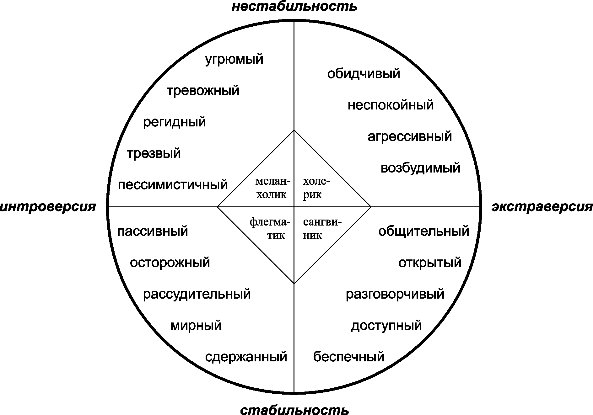

О сайте
Добро пожаловать на сайт! На данном этапе разработки присутствует: базовая теория типов личности, психологический тест. Этот сайт может помочь вам в саморефлексии. Однако не нужно воспринимать этот психологизм всерьез. Для каждого человека присуще использовать разные личностные паттерны в разных ситуациях. Мы не ограничены только одним типом личности, и поэтому он непостоянен...
Теория
Теория о четырех темпераментах предлагает делить всех людей на меланхоликов, холериков, сангвиников и флегматиков. Каждому типу она приписывает определенные черты характера и особенности поведения.
Меланхолики — люди спокойные, медлительные и чувствительные. Они легко расстраиваются, причем часто из-за ситуаций, не стоящих слез, и потом тяжело оправляются от неудач. Меланхолик не торопится и не проявляет инициативу на работе, а отдыхать предпочитает спокойно и в одиночестве. Сильные черты этого типа — умение сочувствовать, вдумчивость и наблюдательность. Также считается, что именно среди меланхоликов особенно много творческих людей.
Холерики — активные, нетерпеливые и вспыльчивые экстраверты. Им трудно долго заниматься одним делом или поддерживать постоянные отношения. Все эмоции холерик проживает и выражает очень ярко, потому считается не очень стрессоустойчивым типом: расстраивается он так же сильно, как и радуется. Такие люди еще и умеют заряжать, убеждать и вести за собой других, так что из них получаются отличные ораторы или продажники.
Флегматики — спокойные, дисциплинированные и хладнокровные интроверты. Они с трудом меняют свои привычки и переключают внимание с одного вида деятельности на другой. Но при этом флегматики — хорошие работники: они трудолюбивы, терпеливы и экономят силы и эмоции, потому не так устают. В отношениях с близкими такие люди тоже могут вести себя сдержанно, но зато они известны как верные и надежные партнеры.
Сангвиники — целеустремленные и энергичные люди, которые хорошо приспосабливаются к любым условиям и быстро находят новых знакомых. Но при этом сангвиник умеет держать эмоции под контролем, поэтому он не такой вспыльчивый и непостоянный, как холерик. На работе такой человек проявляет инициативу, избегает конфликтов и умеет быстро принимать решения в сложных ситуациях. Но если задачи становятся слишком скучными или сложными — опускает руки.
Для того чтобы понять, какой у вас темперамент, предлагается выполнить тест. Тест будет состоять из 15 вопросов. Если вы хотите получше понять свое поведение, рекомендуется пройти тест Айзенка на 16 типов личности. Из-за бюджета в 0 рублей на этом сайте его нет, так что ограничимся кратким опросником.